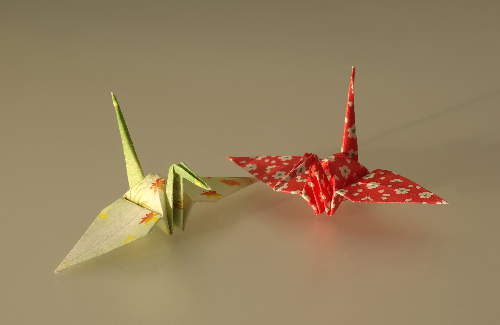

Origami is the Japanese art of paper folding. In modern usage, the word "origami" is often used as an inclusive term for all folding practices, regardless of their culture of origin. The goal is to transform a flat square sheet of paper into a finished sculpture through folding and sculpting techniques. Modern origami practitioners generally discourage the use of cuts, glue, or markings on the paper. Origami folders often use the Japanese word kirigami to refer to designs which use cuts.
"In the detailed Japanese classification, origami is divided into stylized ceremonial origami and recreational origami, and only recreational origami is generally recognized as origami. In Japan, ceremonial origami is generally called 'origata' to distinguish it from recreational origami. The term 'origata' is one of the old terms for origami."
--From Wikipedia
